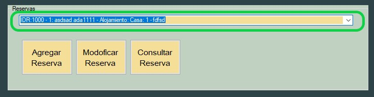
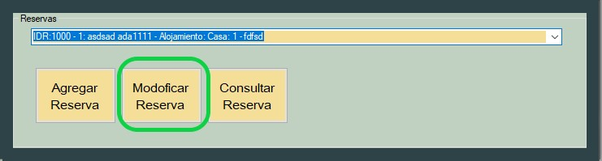
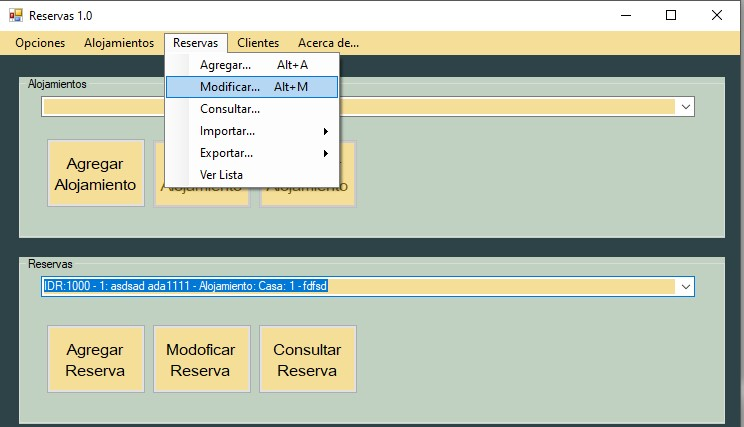
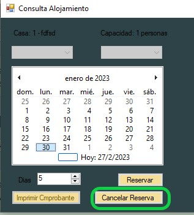

En esta seccion se aportara ayuda acerca de los pasos a seguir para la cancelacion de un reserva
Para comenzar al cancelacion debera seleccionar dicha reserva desplegando la pestaña "Reservas"
Al seleccionar la deseada, el boton "Modificar Reservas" se habilitara
A continuacion puede utilizar el boton "Cancelar Reserva"
Tambien puede navegar por el menu desplegable y elegir la opcion "Reservas" y luego "Modificar" o precionar "Alt+"M
se desplegara la pestaña "Consulta Alojamiento"
En este apartado debera presionar sobre el boton "Cancelar Reserva" , la misma se cancelara y lo devolvera a la ventana de inicio